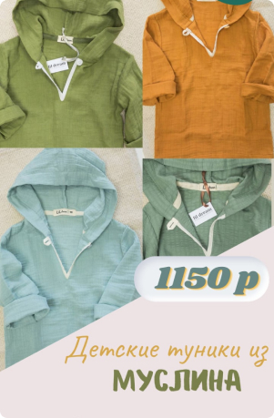
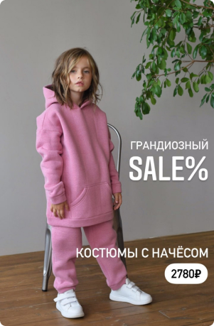
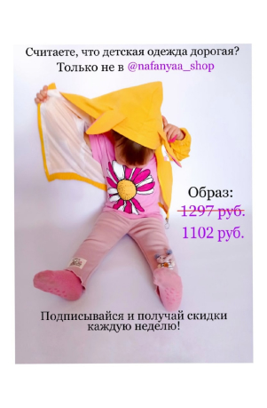

Ниша: Маникюрный салон
Цель компании: Получение лидов, заказов.
Шаг 1.
Анализируем целевую аудиторию, выявляем основные потребности аудитории. Анализируем конкурентов
в пределах своего рынка.
Шаг 2.
В работе можно использовать сайт или мультиссылку(whatsApp,teletype), перед началом работы,
необходимо установить на них пиксель.
Шаг 3.
Распишите портрет потенциального клиента:
Это женщины, сегментируем по возрастам
Сегментируем по интересам
Шаг 4.
Сбор аудитории
Сбор данных с сайта (соберите аудиторию всех кто посещал сайт и отдельно всех кто заполнял
форму на обращение)
Если Instagram аккаунт живой и имеет достаточное количество аудитории, то можно собрать
пользовательскую аудиторию из взаимодействий с вашим аккаунтом. Лучший диапазон 40-90 дней.
Можно воспользоваться парсерами для сбора более целевой аудитории. Также если есть базы
клиентов, можно их оцифровать и выгрузить их в рекламный кабинет.
Также можно собрать похожую аудиторию на основании взаимодействий с вашим аккаунтом.
Потенциальные интересы для сохраненной аудитории:
Работаем также на широкую аудиторию, сегментируем только по возрасту.
Интересы:
Маникюр и педикюр
Шеллак
СПА
Косметология
Шугаринг
Уход за собой
Окрашивание волос
Салоны красоты
Шаг 5.
Запуск рекламных компаний
Цели для запуска:
Трафик, Конверсия, Лидогенерация.
Тестируем изначально на аудиторию взаимодействий, далее подключаем похожую аудиторию и
тестируем на нее.
Конверсия
Если работаете с сайтом, то лучше выбирать эту цель.
Трафик
Трафик можно использовать и для увеличения посещаемости на сайт.
Также трафик можно использовать для увеличения трафика на Instagram. Важно чтобы ваш аккаунт
закрывал боли клиента, этого можно добиться путем выстраивания контент-плана под рекламную
компанию.
Лидогенерация
Создаем шаблон формы.Обязательно в креативе укажите о наличии формы записи и укажите ее
преимущества.
Шаг 6.
Бюджет
На тест используем от 20% рекламного бюджета. Далее работаем с бюджетом на уровне компании.
Примеры креативов:



Понравилась статья?